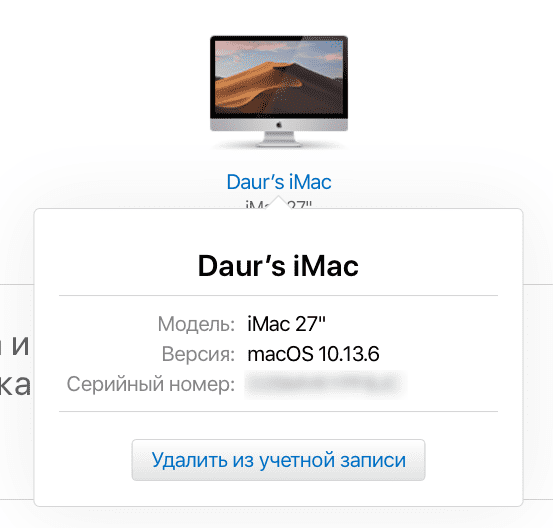
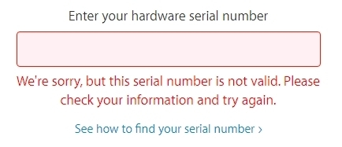
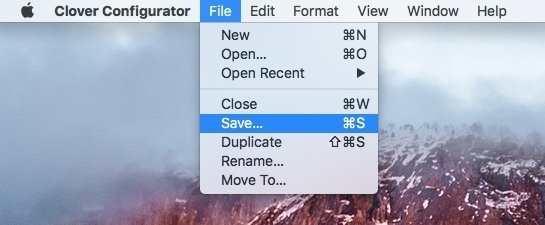

Настройка iCloud и App Store
на хакинтоше
§Настройка iCloud
а) Сброс данных
- Выйдите из App Store, iCloud и других сервисов Apple.

- Войдите в учетную запись Apple и удалите компьютеры Mac, с которых был произведен вход.

- Перезагрузите компьютер.


б) Настройка Clover
- Откройте файл настройки Clover — config.plist через Clover Configurator.
- В разделе SMBIOS выберите компьютер Mac, который наиболее схож с вашей конфигурацией.
- Сгенерируйте серийный номер и SmUUID.
- Скопируйте полученный код из поля Serial Number и введите его в форму на странице checkcoverage.apple.com.
Проверьте этот серийный номер. Если появится ошибка, как на приведенном ниже скриншоте — значит это то, что надо и можно продолжать дальше. В противном случае, если серийный номер окажется «валидным», необходимо будет сгенерировать его по-новому. Иначе возникнут проблемы с дубликатом уже зарегистрированного серийного номера Mac.

- Сохраните изменения.

- Перезагрузите компьютер и войдите со своим логином и паролем в сервисы iCloud и App Store.


Вам может пригодиться решение проблемы с периодическими запросами пароля для iCloud: ddr5.ru/oshibka-podklyucheniya-mac-k-icloud
§Настройка App Store
Запуск App Store не требует каких-либо дополнительных инструкций, если при попытке входа нет ошибок. Проблемы с App Store обычно возникают при использовании внешних Wi-Fi USB-адаптеров, когда сетевое устройство не назначено как основное, то есть обозначено как en1 вместо en0. Далее следует инструкция, которая помогла мне решить эту проблему.
- Откройте поиск Spotlight и введите System Profiler. Откроется окно информации о системе.
- Найдите свой Wi-Fi адаптер. Если Wi-Fi назначено значение en0, то делать ничего не надо и проблема со входом в App Store, скорее всего, связана с отсутствием кекста для сетевого устройства. Если назначено другое значение, например, en1 или en2 то продолжайте читать далее.
- Откройте Finder и выберите в строке меню «Переход к папке».

- И введите /Library/Preferences/
SystemConfiguration.
- Удалите файлы NetworkInterfaces.plist, preferences.plist и перезагрузите компьютер.